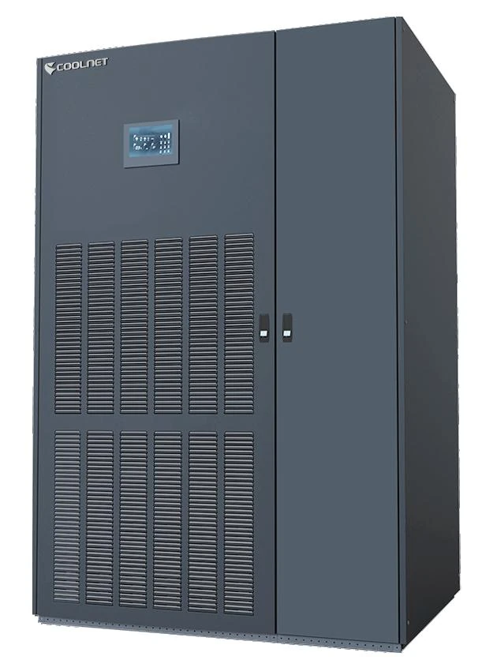

COOLNET
Cyber Master
Охлаждение на уровне помещения
- Серия для охлаждения помещения: DX 20–120 кВт или исполнение на охлаждённой воде 30–200 кВт. Диапазон позволяет подобрать решение под серверный зал.
- Модульная конструкция и варианты подачи воздуха помогают согласовать охлаждение с планировкой и расположением стоек.
- Модель выбираем по полной и явной холодопроизводительности в расчётных условиях — чтобы оборудование отводило тепло заданной IT-нагрузки.